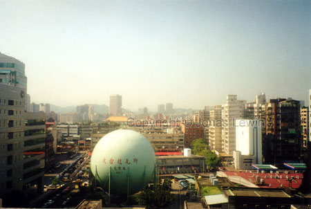
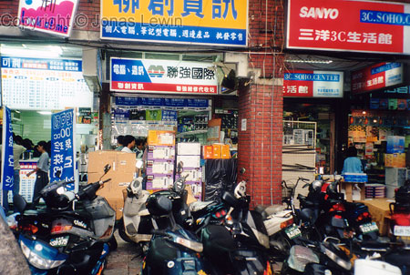
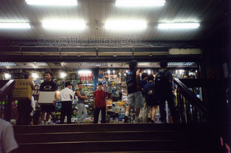
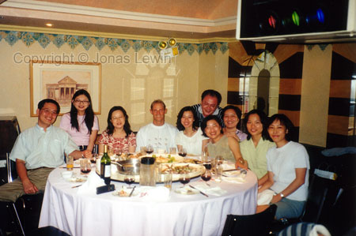

|
Taiwan, Taipei, 1999-07
The country that produces all the cool PC
hardware. Still, they don't have the cool stuff at their offices. They still
hang on to old Pentiums. It seems like they all export their hardware.
This is one of the greatest places to go, if you want to taste some great
food, and tons and tons of variation in dishes.
Everything here tastes great. They must have a secret of how they prepare
their meals. If you find out what it is, you must let me know. I'm dying for
some of their food.
I also went to a small village, named Keelung. Lots of great food here.
Here's long rows of shops, and they are all making their own special food.
Just looking at all the food takes forever. Indeed, you have to try some
food here, or it would be a waste of time and opportunity. One of the dishes
I had looked strange. It was just as transparent as glass, and just as
elastic as soft plastic. It all looked like a giant contact lens. So I took
for granted that it was jelly-fish. I had it in a seafood soup, which to
some extent would clarify my mistake. I was as wrong as I can be. I was
Wooked rice, and prepared in a special way.
We went down to the harbor, and I found this harbor more attractive than
Darling harbor in Sydney. So if you have the opportunity to go here, then
you will for sure have lots of local Taiwan food to enjoy.
Most
of the signs tells me nothing, as I don't understand the language.
Many
computer shops, and they all look alike.
A very popular thing is to go out to Karaoke restaurants. This most often a
small room that will fit up to 30 people. There's always someone singing all
the time, so there is basically no time during the whole time that only the
music is playing. And since this is so popular, they are all very good at
singing. It took me about 1 second to figure out that this was not my thing.
I like to listen to the music, not perform. That's why we invented
musicians...
When I departed from Taiwan, I saw the beautiful landscape they have.
Looking down at the coastal-line and the man-made harbors, the harbors felt
very flat. Not thicker than your normal paper. And still the water would not
overtake these harbors (of course). The I looked up to the mountains, and
then I saw the difference in height. The mountains where truly the majestic
place in the landscape. So incredible big compared to the paper-thin harbor,
that you really wonder why people would ever want to go up there. But then
again, you can find peace and quiet up there. I also imagine that it's very
beautiful up there. It's all a matter of effort.
|